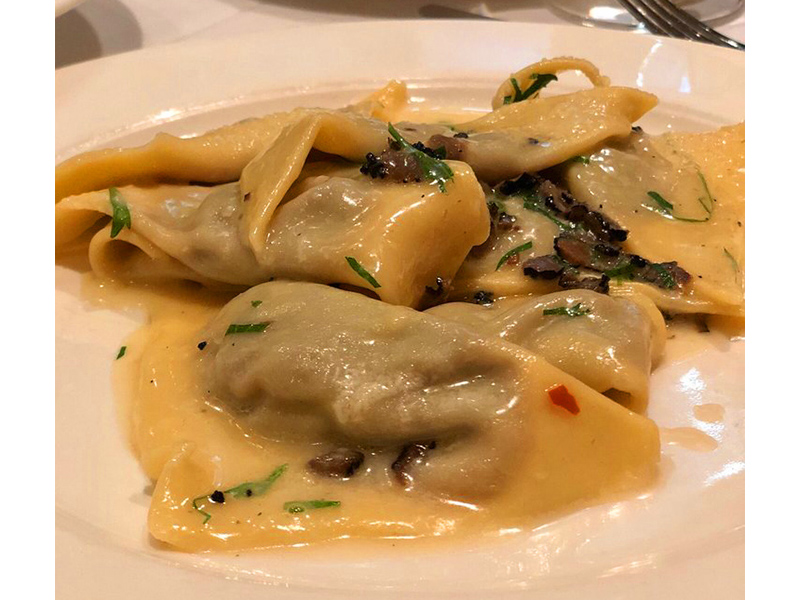

beef cheek ravioli
Beef Cheek Ravioli

Description
One of the singular pleasures of eating out in New York City in the early years of the new century was the arrival of a plate of steaming beef-cheek ravioli at Babbo, Mario Batali's flagship restaurant on Waverly Place in Greenwich Village. The delicate pasta triangles glistened beneath a velvety sauce made of crushed squab liver livened with capers and anchovies.
This is the dish Mario Batali made famous. Enjoy.
Ingredients
- 3 tablespoons extra-virgin olive oil
- 1 white onion, cut into 1/4-inch dice
- 1/2 celery stalk, cut into 1/4-inch dice
- 2 pounds beef cheeks, brisket, or beef chuck, trimmed and cut into 1-inch chunks
- 2 cups red wine
- 1 cup chopped fresh or canned tomatoes
- 1 teaspoon fresh rosemary, chopped
- 1 recipe basic pasta dough
- 1 cup unsalted butter
- 1 recipe chicken livers toscaani
- 2 tablespoons black truffles, sliced
- 1 bunch of flat-leaf parsley, chopped to yield 1/2 cup
- 1/4 cup pecorino romano, plus more for serving
Steps
- Preheat the oven to 400 degrees.
- In a large ovenproof skillet with a lid, heat the olive oil over medium heat. Add teh onion and celery, lower the heat, and cook until very soft but not browned, about 10 minutes.
Increase teh heat to high and add the beef cheeks. Brown on all sides, working in batches if necessary to avoid overcrowding the pan. Add the wine and stire in with a wooden spoon, scraping the bottom of the pan to dislodge browned bits of vegetable and meat. Bring to a boil, stir in teh tomatoes and rosemary, and allow the mixture to return to a boil. Cover, place in teh oven, and cook for 1 hour. or until the meat is stringy and very tender.
- Remove the meat mixture from the oven, allow to cool, and skim off the excess fat. transfer the mixture to a food processor and pulse until smooth.
- Using a pasta machine, roll out the dough on the thinnest setting. Cut the sheets into 4-inch squares. Place 1 tablespoon of the beef filling in teh center of each square, bring two opposite corners together to form a triangle, and press the exdges together firmly to seal. At this point you may freeze the ravioli on cookie sheets between layers of wax paper or parchment.
- Bring 6 quarts of water to a boil and add 2 tablespoons of salt.
- In a 12- to 14-inch saute pan, heat the butter over high heat and cook until it begins to brown but not scorch. Add the chicken livers toscani and cook for 1 minute. Add a few tablespoons of the hot pasta water to create an emulsion in teh pan. Add the truffles and cook for 1 minute more.
- Meanwhile, drop the ravioli in the boiling water and cook for 2 minutes or until they float to the surface. Using a slotted spoon, drain the ravioli and add them to the saute pan.
- Add half of the chopped parsley and the 1/4 cup of grated Pecorino to teh pan. Toss gently for 1 minute over medium heat to coat. Place three ravioli on each of eight warmed dinner plates, removing them carefully from the saute pan with a spoon. Spoon the extra sauce over each serving, top with the remaining parsley, grate Pecorino over each plate, and serve immediately